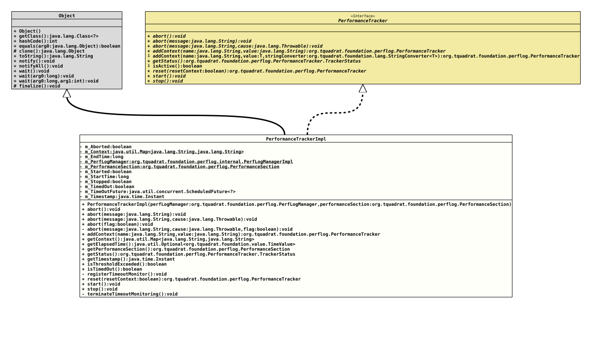

Class PerformanceTrackerImpl
- All Implemented Interfaces:
PerformanceTracker
The implementation for the interface
PerformanceTracker.
- Extauthor:
- Thomas Thrien - thomas.thrien@tquadrat.org
- Version:
- $Id: PerformanceTrackerImpl.java 1258 2026-06-04 18:33:06Z tquadrat $
- Since:
- 0.25.0
- UML Diagram
-

UML Diagram for "org.tquadrat.foundation.perflog.internal.PerformanceTrackerImpl"
{kind=link}
-
Nested Class Summary
Nested classes/interfaces inherited from interface PerformanceTracker
PerformanceTracker.TrackerStatus -
Field Summary
FieldsModifier and TypeFieldDescriptionprivate booleanThe flag that indicates whether the tracker was aborted.The context data.private longThe end time for this performance tracker.private final PerfLogManagerImplThe reference to the performance manager that created this tracker.private final PerformanceSectionThe performance section for this tracker.private booleanThe flag that indicates whether the tracker was started.private longThe start time for this performance tracker.private booleanThe flag that indicates whether the tracker was stopped.private booleanThe flag that indicates whether this tracker was aborted because of a timeout.private ScheduledFuture<?> The future that is used for the timeout handling.private InstantThe absolute time when this performance tracker was started. -
Constructor Summary
ConstructorsConstructorDescriptionPerformanceTrackerImpl(PerfLogManager perfLogManager, PerformanceSection performanceSection) Creates a new instance ofPerformanceTrackerImpl. -
Method Summary
Modifier and TypeMethodDescriptionfinal voidabort()Stops the performance timer.final voidabort(boolean flag) Stops the performance timer and sets the timeout flag.final voidStops the performance timer and takes a message describing the reason for the abort.final voidStops the performance timer and takes a message describing the reason for the abort, plus the exception that caused it.private final voidStops the performance timer, sets the timeout flag and sends a report if required.final PerformanceTrackeraddContext(String name, String value) Adds context information to this tracker.Returns the context information.Returns the elapsed time in nanoseconds.final PerformanceSectionReturns the performance section.Returns the status of this tracker instance.final InstantReturns the timestamp.booleanChecks whether the threshold was exceeded.final booleanChecks whether the tracker was aborted due to a timeout.private final voidRegisters the timeout monitor for this performance tracker.final PerformanceTrackerreset(boolean resetContext) Resets the instance.final voidstart()Resets the instance and starts the performance timer.final voidstop()Stops the performance timer and transfers the elapsed time to thePerfLogMBeanfor further processing.private final voidTerminates the timeout monitor.Methods inherited from class Object
clone, equals, finalize, getClass, hashCode, notify, notifyAll, toString, wait, wait, waitMethods inherited from interface PerformanceTracker
addContext, isActive
-
Field Details
-
m_Aborted
The flag that indicates whether the tracker was aborted. -
m_Context
-
m_EndTime
The end time for this performance tracker.
This is not an absolute time, but a relative value.
- See Also:
-
m_PerfLogManager
The reference to the performance manager that created this tracker. -
m_PerformanceSection
The performance section for this tracker. -
m_Started
The flag that indicates whether the tracker was started. -
m_StartTime
The start time for this performance tracker.
This is not an absolute time, but a relative value.
- See Also:
-
m_Stopped
The flag that indicates whether the tracker was stopped. -
m_TimedOut
The flag that indicates whether this tracker was aborted because of a timeout.
-
m_TimeOutFuture
The future that is used for the timeout handling.
Will be
nullwhen the timeout is disabled. -
m_Timestamp
The absolute time when this performance tracker was started. This is only used for reporting purposes.
-
-
Constructor Details
-
PerformanceTrackerImpl
Creates a new instance ofPerformanceTrackerImpl.- Parameters:
perfLogManager- The reference to the performance manager that created this tracker instance.performanceSection- The reference to the definition for the performance section.
-
-
Method Details
-
abort
Stops the performance timer.
If the tracker has been aborted or stopped already, nothing happens. Same if it was never started.
- Specified by:
abortin interfacePerformanceTracker
-
abort
Stops the performance timer and takes a message describing the reason for the abort.
If the tracker has been aborted or stopped already, nothing happens. Same if it was never started.
- Specified by:
abortin interfacePerformanceTracker- Parameters:
message- The message describing the reason for the abort.
-
abort
Stops the performance timer and takes a message describing the reason for the abort, plus the exception that caused it.
If the tracker has been aborted or stopped already, nothing happens. Same if it was never started.
- Specified by:
abortin interfacePerformanceTracker- Parameters:
message- The message describing the reason for the abort.cause- The exception that caused the abort.
-
abort
Stops the performance timer and sets the timeout flag.
If the tracker has been aborted or stopped already, nothing happens. Same if it was never started.
- Parameters:
flag-trueif the tracker timed out,falseif this is a "regular" abort.
-
abort
Stops the performance timer, sets the timeout flag and sends a report if required.
If the tracker has been aborted or stopped already, nothing happens. Same if it was never started.
- Parameters:
message- The message describing the reason for the abort.cause- The exception that caused the abort.flag-trueif the tracker timed out,falseif this is a "regular" abort.
-
addContext
Adds context information to this tracker. This is also transferred to the
PerfLogMBeanwhen the tracker is stopped or aborted.The given name must conform a valid JSON name and may not start with an underscore ("_"/#x005f).
The given name is unique; if a value is added with an already known name, it will overwrite the existing value.
A call to
PerformanceTracker.start()will not reset the context.An example on how to use the context may look like this:
1//---* Load Data *------------------------------------------------------------- 2try( final var tracker = PerfLogUtils.holdAndStart( PS1 ) ) 3{ 4 tracker.setContext( "Source", … ); 5 6 // Do something here!! 7 … 8}
- Specified by:
addContextin interfacePerformanceTracker- Parameters:
name- The name of the context value.value- The context value;nullremoves the entry with the given name.- Returns:
- This instance.
-
getContext
Returns the context information.- Returns:
- The context information.
-
getElapsedTime
Returns the elapsed time in nanoseconds.- Returns:
- An instance of
Optionalholding the elapsed time.
-
getPerformanceSection
Returns the performance section.- Returns:
- The performance section.
-
getStatus
Returns the status of this tracker instance.- Specified by:
getStatusin interfacePerformanceTracker- Returns:
- The tracker status.
-
getTimestamp
-
isThresholdExceeded
Checks whether the threshold was exceeded. This means the operation covered by the performance section for this tracker took longer than the estimated time.
- Returns:
trueif the operation took longer than the provided threshold,falseotherwise, or no threshold was provided.
-
isTimedOut
Checks whether the tracker was aborted due to a timeout.
- Returns:
trueif the tracker was aborted due to a timeout,falseif it is still running, if it was regularly stopped, if aborted due to other reasons, or if the timeout was disabled for the respective performance section.
-
registerTimeoutMonitor
Registers the timeout monitor for this performance tracker. -
reset
Resets the instance.
If the tracker was already started, but never stopped or aborted, an
IllegalStateExceptionis thrown.- Specified by:
resetin interfacePerformanceTracker- Parameters:
resetContext-trueif also the context should be reset,falseto keep the current context.- Returns:
- This instance.
- Throws:
IllegalStateException- The tracker was already started but not stopped or aborted.
-
start
Resets the instance and starts the performance timer.
If the tracker was already started, but never stopped or aborted, an
IllegalStateExceptionis thrown.- Specified by:
startin interfacePerformanceTracker- Throws:
IllegalStateException- The tracker was already started but not stopped or aborted.
-
stop
Stops the performance timer and transfers the elapsed time to the
PerfLogMBeanfor further processing.If the tracker has been aborted already, nothing happens. Same if it was never started.
- Specified by:
stopin interfacePerformanceTracker- Throws:
IllegalStateException- The tracker was already stopped previously.
-
terminateTimeoutMonitoring
Terminates the timeout monitor.
-